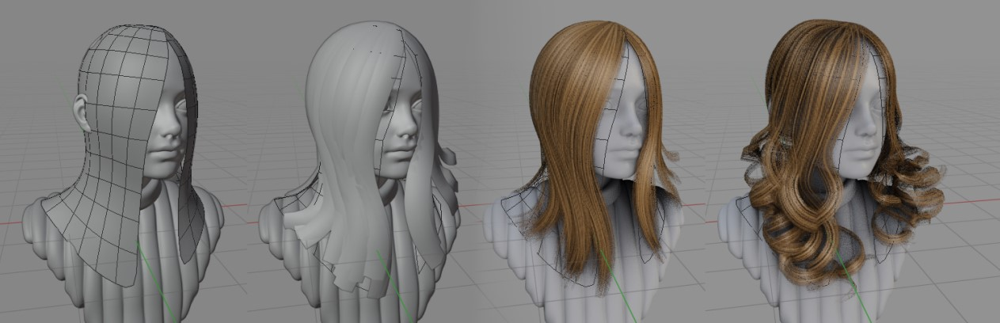

Hair Tool 2 (for Blender 2.8)¶
 Hair Tool is Blender addon for creating game hair cards with use of 3d curves.
This addon will help you generate hair card with uv's and much more:
- generate and groom hair ribbons (based on blender particle hair)
- generate hair ribbons from guide grid mesh
- drawing curve hair (or particle hair) on mesh surfaces
- automated uv (random uv area is assigned for each spline)
- uv texture preview directly on curve ribbons
- easy and convenient switching back and forth between curve ribbons and mesh mesh, while preserving uv's
- adjust ribbons looks (tapering radius, randomizing tilt, editing profile)
- convert Curves to Particle Hair, Particle Hair to curve ribbons, Curve ribbons to mesh ribbons and so on.
- Curve Resampling - increase, decrease curve/ribbon points count
- Generating vertex color/weights gradients for mesh ribbons.
- And More!
Addon panel is located in right Sidebar: "Hair Tool" tab.
There is also build in ctrl+shift+H hotkey (can be changed in preferences) with lots of options for adjusting hair look (resampling, tapering, edition of curve profile), converting curves to particles hair or meshes etc.
For support or bug report use this discord server.